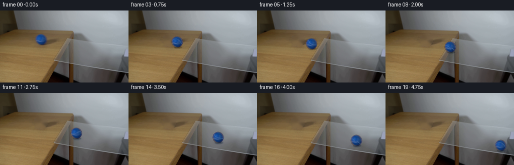
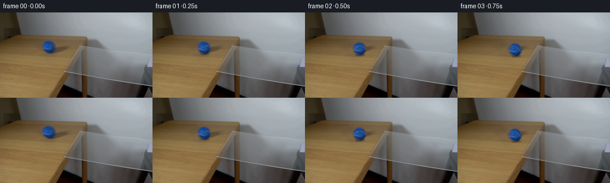

CODING AGENTS AS PIXEL WORLD MODELS
traex/GPT-5.6-Sol · 0027
点击播放 · 原生 RGB 像素
逐轮保存的候选
回放视频、检查图与代码变化。
每份候选均可单独播放。实际图片检查记录在下方工具轨迹中。
候选 01播放与检查图
点击播放 · 原生 RGB 像素


展开代码变化
--- 上一保存版本
+++ 本次保存版本
@@ -0,0 +1,183 @@
+"""Generate a locked-camera animation of the blue ball rolling onto the glass."""
+from pathlib import Path
+import cv2
+import numpy as np
+from PIL import Image
+import artifact_io
+
+CASE_DIR = Path(__file__).resolve().parent
+
+
+def smoothstep(edge0, edge1, x):
+ z = np.clip((x - edge0) / (edge1 - edge0), 0.0, 1.0)
+ return z * z * (3.0 - 2.0 * z)
+
+
+def clean_plate(image, cx=81.45, cy=57.55):
+ """Remove the original ball and its tiny contact shadow from the wood."""
+ h, w = image.shape[:2]
+ yy, xx = np.mgrid[:h, :w]
+ # The slightly asymmetric extension at the bottom includes the contact shadow.
+ core = ((xx - cx) / 13.1) ** 2 + ((yy - (cy + .8)) / 13.0) ** 2 < 1.0
+ mask = (core.astype(np.uint8) * 255)
+ # Telea follows the low-frequency wood shading particularly well here.
+ bgr = cv2.cvtColor(image, cv2.COLOR_RGB2BGR)
+ repaired = cv2.inpaint(bgr, mask, 5.0, cv2.INPAINT_TELEA)
+ repaired = cv2.cvtColor(repaired, cv2.COLOR_BGR2RGB)
+ return repaired
+
+
+def source_ball_rgba(image, plate, cx=81.45, cy=57.55, radius=11.15):
+ """Recover the photographed ball's shaded color as a reusable RGBA sprite."""
+ size = 31
+ half = size // 2
+ # Sample in image coordinates around the measured subpixel centre.
+ gy, gx = np.mgrid[-half:half + 1, -half:half + 1].astype(np.float32)
+ mapx = (cx + gx).astype(np.float32)
+ mapy = (cy + gy).astype(np.float32)
+ obs = cv2.remap(image, mapx, mapy, cv2.INTER_CUBIC,
+ borderMode=cv2.BORDER_REFLECT_101).astype(np.float32)
+ bg = cv2.remap(plate, mapx, mapy, cv2.INTER_CUBIC,
+ borderMode=cv2.BORDER_REFLECT_101).astype(np.float32)
+ rr = np.hypot(gx, gy)
+ # A one-pixel feather preserves the fuzzy, anti-aliased photographed edge.
+ alpha = np.clip((radius + .55 - rr) / 1.25, 0.0, 1.0)
+ alpha = smoothstep(0.0, 1.0, alpha)
+ # Undo the old background contribution along the feathered circumference.
+ denom = np.maximum(alpha[..., None], .17)
+ fg = (obs - (1.0 - alpha[..., None]) * bg) / denom
+ fg = np.clip(fg, 0, 255)
+ # Very transparent samples are numerically unstable and never materially show.
+ fg[alpha < .12] = 0
+ return fg.astype(np.float32), alpha.astype(np.float32), half
+
+
+def rodrigues(points, axis, angle):
+ """Rotate vectors in the last dimension around a unit axis."""
+ axis = np.asarray(axis, np.float32)
+ return (points * np.cos(angle)
+ + np.cross(axis, points) * np.sin(angle)
+ + axis * np.sum(points * axis, axis=-1, keepdims=True)
+ * (1.0 - np.cos(angle)))
+
+
+def add_glass_contact(frame, cx, cy, glass_amount):
+ """Subtle soft contact/reflected-blue cue on the transparent glass."""
+ if glass_amount <= 0:
+ return frame
+ h, w = frame.shape[:2]
+ # Draw large then blur, retaining a subdued physically plausible glass reflection.
+ layer = np.zeros((h, w), np.float32)
+ cv2.ellipse(layer, (int(round(cx + 1.5)), int(round(cy + 10.7))),
+ (8, 2), 0, 0, 360, float(.34 * glass_amount), -1, cv2.LINE_AA)
+ layer = cv2.GaussianBlur(layer, (0, 0), 1.25)
+ # Reflection is a very low-opacity dark blue; glass lines stay visible through it.
+ target = np.array([20.0, 51.0, 91.0], np.float32)
+ out = frame.astype(np.float32)
+ out = out * (1.0 - layer[..., None]) + target * layer[..., None]
+ return np.clip(out, 0, 255).astype(np.uint8)
+
+
+def add_shadow(frame, cx, cy, glass_amount):
+ h, w = frame.shape[:2]
+ shadow = np.zeros((h, w), np.float32)
+ # A ball close to its support produces a narrow contact shadow. It becomes
+ # slightly lighter once the support is clear glass.
+ strength = .31 * (1.0 - glass_amount) + .20 * glass_amount
+ cv2.ellipse(shadow, (int(round(cx + 1.3)), int(round(cy + 10.3))),
+ (8, 2), 0, 0, 360, float(strength), -1, cv2.LINE_AA)
+ shadow = cv2.GaussianBlur(shadow, (0, 0), .80)
+ out = frame.astype(np.float32) * (1.0 - shadow[..., None])
+ return np.clip(out, 0, 255).astype(np.uint8)
+
+
+def composite_ball(frame, fg, alpha, half, cx, cy, theta, travel_axis):
+ """Composite the recovered sphere and a rotating curved seam."""
+ h, w = frame.shape[:2]
+ size = 2 * half + 1
+ # Translate the source sprite with subpixel accuracy.
+ x0 = int(np.floor(cx)) - half - 2
+ y0 = int(np.floor(cy)) - half - 2
+ x1, y1 = x0 + size + 4, y0 + size + 4
+ yy, xx = np.mgrid[y0:y1, x0:x1].astype(np.float32)
+ lx, ly = xx - cx, yy - cy
+ mapx = lx + half
+ mapy = ly + half
+ sampled_fg = cv2.remap(fg, mapx, mapy, cv2.INTER_CUBIC,
+ borderMode=cv2.BORDER_CONSTANT, borderValue=0)
+ sampled_a = cv2.remap(alpha, mapx, mapy, cv2.INTER_CUBIC,
+ borderMode=cv2.BORDER_CONSTANT, borderValue=0)
+ sampled_a = np.clip(sampled_a, 0.0, 1.0)
+
+ # Tennis-ball seam painted in object coordinates, then rolled with the sphere.
+ radius = 11.15
+ nx, ny = lx / radius, ly / radius
+ inside = nx * nx + ny * ny < .985
+ nz = np.sqrt(np.clip(1.0 - nx * nx - ny * ny, 0.0, 1.0))
+ normals = np.stack([nx, ny, nz], axis=-1)
+ obj = rodrigues(normals, travel_axis, -theta)
+ # A gently wavy closed seam reads more like a tennis-ball seam than a ruler line.
+ seam_field = (obj[..., 1] + .23 * np.sin(2.25 * np.arctan2(obj[..., 2], obj[..., 0]) + .5))
+ seam = 1.0 - smoothstep(.040, .105, np.abs(seam_field))
+ seam *= inside * smoothstep(.05, .55, nz) * sampled_a
+ # Keep the seam blue-white and subdued under this dim room lighting.
+ seam_color = np.array([77.0, 112.0, 163.0], np.float32)
+ sampled_fg = sampled_fg * (1.0 - .50 * seam[..., None]) + seam_color * (.50 * seam[..., None])
+
+ # A minute stationary catchlight reinforces a fixed real-world light while texture rolls.
+ highlight = np.exp(-((lx + 3.6) ** 2 / 7.0 + (ly + 4.1) ** 2 / 6.0)) * inside
+ sampled_fg = sampled_fg + highlight[..., None] * np.array([5.0, 7.0, 10.0])
+
+ # Clip crop to frame (the present trajectory remains in bounds, but keep robust).
+ xa, ya, xb, yb = max(0, x0), max(0, y0), min(w, x1), min(h, y1)
+ sx0, sy0 = xa - x0, ya - y0
+ sx1, sy1 = sx0 + (xb - xa), sy0 + (yb - ya)
+ a = sampled_a[sy0:sy1, sx0:sx1, None]
+ out = frame.copy().astype(np.float32)
+ out[ya:yb, xa:xb] = (out[ya:yb, xa:xb] * (1.0 - a)
+ + sampled_fg[sy0:sy1, sx0:sx1] * a)
+ return np.clip(out, 0, 255).astype(np.uint8)
+
+
+def generate():
+ first = np.asarray(Image.open(CASE_DIR / "first_frame.png").convert("RGB"), dtype=np.uint8)
+ assert first.shape == (144, 256, 3)
+ cx0, cy0 = 81.45, 57.55
+ plate = clean_plate(first, cx0, cy0)
+ fg, alpha, half = source_ball_rgba(first, plate, cx0, cy0)
+
+ # The image-space trajectory follows the glass's perspective centreline.
+ # A gentle acceleration models rolling down the very slight glass incline.
+ slope = .318
+ direction = np.array([1.0, slope], np.float32)
+ direction /= np.linalg.norm(direction)
+ # Rotation axis perpendicular to motion in the image plane.
+ travel_axis = np.array([direction[1], -direction[0], 0.0], np.float32)
+ frames = []
+ for i in range(20):
+ if i == 0:
+ # Contract: exact, unmodified source pixels.
+ frames.append(first.copy())
+ continue
+ t = i / 4.0
+ dx = 18.0 * t + 2.75 * t * t
+ cx = cx0 + dx
+ cy = cy0 + slope * dx
+ # The pane begins at its diagonal left edge. Fade glass-specific optics in
+ # over several pixels as the contact point crosses it.
+ glass_amount = float(smoothstep(119.0, 136.0, cx))
+ frame = plate.copy()
+ frame = add_glass_contact(frame, cx, cy, glass_amount)
+ frame = add_shadow(frame, cx, cy, glass_amount)
+ path_distance = dx * np.sqrt(1.0 + slope * slope)
+ theta = path_distance / 11.15
+ frame = composite_ball(frame, fg, alpha, half, cx, cy, theta, travel_axis)
+ frames.append(frame)
+ frames = np.stack(frames).astype(np.uint8)
+ assert frames.shape == (20, 144, 256, 3)
+ assert np.array_equal(frames[0], first)
+ return frames
+
+
+if __name__ == "__main__":
+ artifact_io.save(generate(), CASE_DIR)
可观测工具轨迹
实际执行的命令与返回图片。
命令 1exit 0
/bin/bash -lc "cat prompt.txt && printf '\\n---RULES---\\n' && cat GENERATION_RULES.md"
命令 2exit 127
/bin/bash -lc "find . -maxdepth 2 -type f -printf '%p %s bytes\\n' | sort && file first_frame.png"
命令 3exit 0
/bin/bash -lc "python3 - <<'PY'
from PIL import Image
import numpy as np
im=np.array(Image.open('first_frame.png').convert('RGB'))
print(im.shape, im.dtype, im.min(), im.max())
# regional means / variances on 16x12 grid
h,w=im.shape[:2]
for gy in range(0,h,12):
row=[]
for gx in range(0,w,16):
a=im[gy:min(gy+12,h),gx:min(gx+16,w)]
row.append(tuple(np.mean(a,axis=(0,1)).round().astype(int)))
print(gy,row)
# blue pixels
r,g,b=im.transpose(2,0,1)
mask=(b>g*1.12)&(b>r*1.3)&(b-r>25)&(b>70)
ys,xs=np.where(mask)
print('blue count bbox',len(xs),(xs.min(),ys.min(),xs.max(),ys.max()) if len(xs) else None,'centroid', (xs.mean(),ys.mean()) if len(xs) else None)
# likely wood colors, dark edges
for name,m in [('blue',mask),('dark',(r<80)&(g<80)&(b<80)),('bright',(r>240)&(g>240)&(b>240)),('wood',(r>100)&(r>g*1.05)&(g>b*1.02)&(r-b>15))]:
yy,xx=np.where(m); print(name,len(xx), 'bbox', (xx.min(),yy.min(),xx.max(),yy.max()) if len(xx) else '')
PY"命令 4exit 0
/bin/bash -lc "python3 - <<'PY'
import cv2, numpy as np
im=cv2.imread('first_frame.png')
g=cv2.cvtColor(im,cv2.COLOR_BGR2GRAY)
ed=cv2.Canny(g,30,80)
ls=cv2.HoughLinesP(ed,1,np.pi/180,threshold=25,minLineLength=20,maxLineGap=6)
for x in sorted([tuple(a[0]) for a in ls], key=lambda z:(z[1]+z[3],z[0])):
x1,y1,x2,y2=x; print(x, 'len',round(np.hypot(x2-x1,y2-y1),1),'ang',round(np.degrees(np.arctan2(y2-y1,x2-x1)),1))
# max horizontal/vertical gradients averaged
gx=np.mean(np.abs(cv2.Sobel(g,cv2.CV_32F,1,0)),axis=0); gy=np.mean(np.abs(cv2.Sobel(g,cv2.CV_32F,0,1)),axis=1)
print('gx', sorted(enumerate(gx),key=lambda z:-z[1])[:20]); print('gy',sorted(enumerate(gy),key=lambda z:-z[1])[:20])
PY"命令 5exit 0
/bin/bash -lc "sed -n '1,240p' artifact_io.py && python3 - <<'PY'
from PIL import Image
import numpy as np, cv2
im=np.array(Image.open('first_frame.png').convert('RGB'))
# Print crop around ball as hue/saturation chars, 60:105 x 40:77
hsv=cv2.cvtColor(im,cv2.COLOR_RGB2HSV)
for y in range(40,78,2):
s=''
for x in range(58,108,2):
H,S,V=hsv[y,x]
if S>100 and H>85 and H<135: c='B'
elif S>50 and H<30: c='w'
elif V<55:c='#'
elif V<100:c='d'
else:c='.'
s+=c
print(f'{y:3}',s)
# exact RGB samples at ball center/disc radial
for y in [45,47,49,51,53,55,57,59,61,63,65,67,69,71]:
print(y,[tuple(im[y,x]) for x in range(68,97,4)])
PY"命令 6exit 0
/bin/bash -lc "cat > generate.py <<'PY'
\"\"\"Generate a locked-camera animation of the blue ball rolling onto the glass.\"\"\"
from pathlib import Path
import cv2
import numpy as np
from PIL import Image
import artifact_io
CASE_DIR = Path(__file__).resolve().parent
def smoothstep(edge0, edge1, x):
z = np.clip((x - edge0) / (edge1 - edge0), 0.0, 1.0)
return z * z * (3.0 - 2.0 * z)
def clean_plate(image, cx=81.45, cy=57.55):
\"\"\"Remove the original ball and its tiny contact shadow from the wood.\"\"\"
h, w = image.shape[:2]
yy, xx = np.mgrid[:h, :w]
# The slightly asymmetric extension at the bottom includes the contact shadow.
core = ((xx - cx) / 13.1) ** 2 + ((yy - (cy + .8)) / 13.0) ** 2 < 1.0
mask = (core.astype(np.uint8) * 255)
# Telea follows the low-frequency wood shading particularly well here.
bgr = cv2.cvtColor(image, cv2.COLOR_RGB2BGR)
repaired = cv2.inpaint(bgr, mask, 5.0, cv2.INPAINT_TELEA)
repaired = cv2.cvtColor(repaired, cv2.COLOR_BGR2RGB)
return repaired
def source_ball_rgba(image, plate, cx=81.45, cy=57.55, radius=11.15):
\"\"\"Recover the photographed ball's shaded color as a reusable RGBA sprite.\"\"\"
size = 31
half = size // 2
# Sample in image coordinates around the measured subpixel centre.
gy, gx = np.mgrid[-half:half + 1, -half:half + 1].astype(np.float32)
mapx = (cx + gx).astype(np.float32)
mapy = (cy + gy).astype(np.float32)
obs = cv2.remap(image, mapx, mapy, cv2.INTER_CUBIC,
borderMode=cv2.BORDER_REFLECT_101).astype(np.float32)
bg = cv2.remap(plate, mapx, mapy, cv2.INTER_CUBIC,
borderMode=cv2.BORDER_REFLECT_101).astype(np.float32)
rr = np.hypot(gx, gy)
# A one-pixel feather preserves the fuzzy, anti-aliased photographed edge.
alpha = np.clip((radius + .55 - rr) / 1.25, 0.0, 1.0)
alpha = smoothstep(0.0, 1.0, alpha)
# Undo the old background contribution along the feathered circumference.
denom = np.maximum(alpha[..., None], .17)
fg = (obs - (1.0 - alpha[..., None]) * bg) / denom
fg = np.clip(fg, 0, 255)
# Very transparent samples are numerically unstable and never materially show.
fg[alpha < .12] = 0
return fg.astype(np.float32), alpha.astype(np.float32), half
def rodrigues(points, axis, angle):
\"\"\"Rotate vectors in the last dimension around a unit axis.\"\"\"
axis = np.asarray(axis, np.float32)
return (points * np.cos(angle)
+ np.cross(axis, points) * np.sin(angle)
+ axis * np.sum(points * axis, axis=-1, keepdims=True)
* (1.0 - np.cos(angle)))
def add_glass_contact(frame, cx, cy, glass_amount):
\"\"\"Subtle soft contact/reflected-blue cue on the transparent glass.\"\"\"
if glass_amount <= 0:
return frame
h, w = frame.shape[:2]
# Draw large then blur, retaining a subdued physically plausible glass reflection.
layer = np.zeros((h, w), np.float32)
cv2.ellipse(layer, (int(round(cx + 1.5)), int(round(cy + 10.7))),
(8, 2), 0, 0, 360, float(.34 * glass_amount), -1, cv2.LINE_AA)
layer = cv2.GaussianBlur(layer, (0, 0), 1.25)
# Reflection is a very low-opacity dark blue; glass lines stay visible through it.
target = np.array([20.0, 51.0, 91.0], np.float32)
out = frame.astype(np.float32)
out = out * (1.0 - layer[..., None]) + target * layer[..., None]
return np.clip(out, 0, 255).astype(np.uint8)
def add_shadow(frame, cx, cy, glass_amount):
h, w = frame.shape[:2]
shadow = np.zeros((h, w), np.float32)
# A ball close to its support produces a narrow contact shadow. It becomes
# slightly lighter once the support is clear glass.
strength = .31 * (1.0 - glass_amount) + .20 * glass_amount
cv2.ellipse(shadow, (int(round(cx + 1.3)), int(round(cy + 10.3))),
(8, 2), 0, 0, 360, float(strength), -1, cv2.LINE_AA)
shadow = cv2.GaussianBlur(shadow, (0, 0), .80)
out = frame.astype(np.float32) * (1.0 - shadow[..., None])
return np.clip(out, 0, 255).astype(np.uint8)
def composite_ball(frame, fg, alpha, half, cx, cy, theta, travel_axis):
\"\"\"Composite the recovered sphere and a rotating curved seam.\"\"\"
h, w = frame.shape[:2]
size = 2 * half + 1
# Translate the source sprite with subpixel accuracy.
x0 = int(np.floor(cx)) - half - 2
y0 = int(np.floor(cy)) - half - 2
x1, y1 = x0 + size + 4, y0 + size + 4
yy, xx = np.mgrid[y0:y1, x0:x1].astype(np.float32)
lx, ly = xx - cx, yy - cy
mapx = lx + half
mapy = ly + half
sampled_fg = cv2.remap(fg, mapx, mapy, cv2.INTER_CUBIC,
borderMode=cv2.BORDER_CONSTANT, borderValue=0)
sampled_a = cv2.remap(alpha, mapx, mapy, cv2.INTER_CUBIC,
borderMode=cv2.BORDER_CONSTANT, borderValue=0)
sampled_a = np.clip(sampled_a, 0.0, 1.0)
# Tennis-ball seam painted in object coordinates, then rolled with the sphere.
radius = 11.15
nx, ny = lx / radius, ly / radius
inside = nx * nx + ny * ny < .985
nz = np.sqrt(np.clip(1.0 - nx * nx - ny * ny, 0.0, 1.0))
normals = np.stack([nx, ny, nz], axis=-1)
obj = rodrigues(normals, travel_axis, -theta)
# A gently wavy closed seam reads more like a tennis-ball seam than a ruler line.
seam_field = (obj[..., 1] + .23 * np.sin(2.25 * np.arctan2(obj[..., 2], obj[..., 0]) + .5))
seam = 1.0 - smoothstep(.040, .105, np.abs(seam_field))
seam *= inside * smoothstep(.05, .55, nz) * sampled_a
# Keep the seam blue-white and subdued under this dim room lighting.
seam_color = np.array([77.0, 112.0, 163.0], np.float32)
sampled_fg = sampled_fg * (1.0 - .50 * seam[..., None]) + seam_color * (.50 * seam[..., None])
# A minute stationary catchlight reinforces a fixed real-world light while texture rolls.
highlight = np.exp(-((lx + 3.6) ** 2 / 7.0 + (ly + 4.1) ** 2 / 6.0)) * inside
sampled_fg = sampled_fg + highlight[..., None] * np.array([5.0, 7.0, 10.0])
# Clip crop to frame (the present trajectory remains in bounds, but keep robust).
xa, ya, xb, yb = max(0, x0), max(0, y0), min(w, x1), min(h, y1)
sx0, sy0 = xa - x0, ya - y0
sx1, sy1 = sx0 + (xb - xa), sy0 + (yb - ya)
a = sampled_a[sy0:sy1, sx0:sx1, None]
out = frame.copy().astype(np.float32)
out[ya:yb, xa:xb] = (out[ya:yb, xa:xb] * (1.0 - a)
+ sampled_fg[sy0:sy1, sx0:sx1] * a)
return np.clip(out, 0, 255).astype(np.uint8)
def generate():
first = np.asarray(Image.open(CASE_DIR / \"first_frame.png\").convert(\"RGB\"), dtype=np.uint8)
assert first.shape == (144, 256, 3)
cx0, cy0 = 81.45, 57.55
plate = clean_plate(first, cx0, cy0)
fg, alpha, half = source_ball_rgba(first, plate, cx0, cy0)
# The image-space trajectory follows the glass's perspective centreline.
# A gentle acceleration models rolling down the very slight glass incline.
slope = .318
direction = np.array([1.0, slope], np.float32)
direction /= np.linalg.norm(direction)
# Rotation axis perpendicular to motion in the image plane.
travel_axis = np.array([direction[1], -direction[0], 0.0], np.float32)
frames = []
for i in range(20):
if i == 0:
# Contract: exact, unmodified source pixels.
frames.append(first.copy())
continue
t = i / 4.0
dx = 18.0 * t + 2.75 * t * t
cx = cx0 + dx
cy = cy0 + slope * dx
# The pane begins at its diagonal left edge. Fade glass-specific optics in
# over several pixels as the contact point crosses it.
glass_amount = float(smoothstep(119.0, 136.0, cx))
frame = plate.copy()
frame = add_glass_contact(frame, cx, cy, glass_amount)
frame = add_shadow(frame, cx, cy, glass_amount)
path_distance = dx * np.sqrt(1.0 + slope * slope)
theta = path_distance / 11.15
frame = composite_ball(frame, fg, alpha, half, cx, cy, theta, travel_axis)
frames.append(frame)
frames = np.stack(frames).astype(np.uint8)
assert frames.shape == (20, 144, 256, 3)
assert np.array_equal(frames[0], first)
return frames
if __name__ == \"__main__\":
artifact_io.save(generate(), CASE_DIR)
PY
python3 generate.py
python3 - <<'PY'
from PIL import Image
import numpy as np
z=np.load('pixels.npz')['pixels']
f=np.array(Image.open('first_frame.png').convert('RGB'))
packed=(f[:,:,0].astype(np.uint32)<<16)|(f[:,:,1].astype(np.uint32)<<8)|f[:,:,2].astype(np.uint32)
print('pixels',z.shape,z.dtype,'frame0 exact',np.array_equal(z[:,:,0],packed))
for i in [0,1,4,8,12,16,19]:
a=np.array(Image.open(f'frames/{i:02d}.png'))
r,g,b=a.transpose(2,0,1); m=(b>g*1.10)&(b>r*1.25)&(b-r>20)
y,x=np.where(m)
print(i,'blue bbox/centroid/count', (x.min(),y.min(),x.max(),y.max()),(round(x.mean(),1),round(y.mean(),1)),len(x))
PY"命令 7exit 0
/bin/bash -lc "python3 - <<'PY'
from PIL import Image
import numpy as np
first=np.array(Image.open('frames/00.png'))
for i in range(1,20):
a=np.array(Image.open(f'frames/{i:02d}.png'))
d=np.max(np.abs(a.astype(int)-first.astype(int)),2)
y,x=np.where(d>2)
if i in (1,2,4,8,12,16,19): print(i,len(x),(x.min(),y.min(),x.max(),y.max()),'mean/max',round(d[y,x].mean(),1),d.max())
# consecutive motion difference to ensure every frame changes
for i in range(1,20):
a=np.array(Image.open(f'frames/{i-1:02d}.png')).astype(int)
b=np.array(Image.open(f'frames/{i:02d}.png')).astype(int)
print(i, np.count_nonzero(np.max(np.abs(a-b),2)>1), end='; ')
print()
PY
ls -lh pixels.npz inspection.png index.html frames/00.png frames/19.png generate.py"保存候选 1 份；完成命令 7 次；可验证图片返回 0 张。原始 API 响应与完整日志保留在本地。